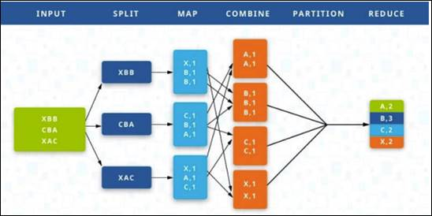

4. Үлкен көлемді деректермен жұмыс
жасау технологиялары
1.
Үлкен көлемді
деректермен жұмыс жасау технологиясының құрылуы.
2.
MapReduce
алгоритмі.
3.
Үлкен көлемді
деректерді басқару құралдары.
4.1 Үлкен
көлемді деректермен жұмыс жасау технологиясының құрылуы
ХХ ғасырдың
90-шы жылдарының соңында көптеген ұйымдар қолда-ныстағы
IT-шешімдердің шектен тыс деректер ағынын жеңу үшін
жеткіліксіз екендігіне тап болды. Ақпаратты сақтау мен талдаудың
жаңа технологиялары қажет болды. Деректердің үлкен көлемімен
жұмыс жасау барысында ресурстар аяқталған кезде екі мүмкін
болатын шешім бар: тік немесе көлденең масштабтау.
Тік
масштабтауды қолданған кезде машинаға көбірек есептеу қуаты,
ал көлденең масштабтауда көп машиналар бірдей сыйымдылықты
бөлу үшін жұ-мыс жүктемесіқосылады.
Тік
масштабтау көлденеңінен масштабтаудан гөрі басқару оңай
және салыстырмалы түрде кішішірім проблемалармен жұмыс жасау
кезінде тиімді екендігі дәлелденді. Алайда көлденең
масштабтау, әдетте, үлкен тапсырмамен жұмыс жасау кезінде тік
массаға қарағанда арзан және жылдам.
Деректердің
үлкен көлемі пайда болған кезде тік масштабтау енді бизнестің
қажеттіліктерін қамтамасыз етпеді. Компанияларға ақауларға
төзімді және көлденең массаланған технологиялар қажет
болды.
Бір уақытта
Google корпорациясы құрған және көлденең
масштабтауға негізделген MapReduce алгоритмі бизнес сұранысына
жауап болды.
4.2
MapReduce алгоритмі
MapReduce -
бұл өңдеу процесін екі қарапайым функцияға бөлу
техно-логиясы: Map және Reduce. Ондағы бір мәселе бір-біріне
параллель орында-латын шексіз көп кіші ішкі тапсырмаларға бөлінеді,
содан кейін алынған нәтиже біріктіріледі. Осылайша, MapReduce-де
кірістер көптеген бөліктерге бөлінеді. Олардың әрқайсысы
берілген топтау функциясына (groupby) сәйкес өңдеу және
кейіннен жинақтау үшін басқа компьютерге жіберіледі.
Белгілі бір
тапсырманың әр бөлігін кластер түйіндерінің бірін
өңдеуге беруге болады. Кластер - бұл бірге жұмыс
істейтін, жалпы тапсырмаларды орындайтын және клиенттер оларды бір жүйе
ретінде көретін серверлер тобы. Кластерде көптеген серверлер болуы
мүмкін. Мысалы, Hadoop Yahoo клас-терінде 42 мыңнан астам машина
бар [12].
Арнайы жабдықтың
және бағдарламалық қамтамасыз етудің арқасында
бір серверді пайдалану кезінде қайтарылмайтын ақаулардан қорғаудың
осын-дай деңгейі іске асырылады. Серверлерде орындалған тапсырмалар
сәтсіз бол-ған жағдайда, ол басқа серверді алады және
жүйенің өнімділігін қалпына келтіреді. Сонымен қатар,
пайдаланушылар жұмыс қабілеттілігінің уақытша жоғалуын
ғана байқайды немесе кейде олар ештеңе байқамауы да мүмкін.
Ақпарат көлемін ұлғайту кезінде кластерді тапсырма
белгілеген өлшемдерге дейін кеңейту керек.
Сонымен,
MapReduce алгоритмі - бұл шекті есептеулердің моделі, ал
компьютерлер кластері үлкен деректерді параллельдеу үшін қолданылады.
Бұл оларды өңдеуді жеңілдетеді. Кіріс деректерін
алдын-ала өңдеуге арналған таратылған файлдық жүйенің
жұмыс түйіндеріне (individual nodes) бөледі де алдын-ала өңделген
деректерді жинақтайды.
Соңғы
нәтижені алу үшін алгоритм параллельді түрде таратылған
файлдық жүйенің әрбір түйініндегі аралық қосындыларды
есептеп, содан кейін осы аралық мәндерді қорытындылайды.
MapReduce
алгоритмінде деректерді өңдеу үш сатыда жүреді:
1. Map кезеңі.
Бұл кезең функционалдық программалау тілдерінде деректерді
алдын ала өңдеу мен сүзу жұмыстарынан тұрады.
Бір кіріс
жазбасына қолданылатын map функциясы көптеген «кілт мәні» жұптарын
шығарады. Кілт пен мәнге қатысты объектілердің барлығы
пайда-ланушыға байланысты және бірдей кілті бар деректер болашақта
Reduce функ-циясының бір данасында аяқталады.
2. Shuffle
кезеңі. Пайдаланушыға білдірмей орындалады. Бұл кезеңде
Map функциясының шығуы «себеттер» бойынша сұрыпталады: әр
«себет» map сатысының бір шығу кілтіне сәйкес келеді. Болашақта
бұл «себеттер» Reduce үшін кіреберіс болады.
3. Reduce
кезеңі. Shuffle сатысында құрылған мәндері бар әрбір
«себет» Reduce функциясының кірісіне түседі. Reduce функциясын
пайдаланушы орнатады және жеке «себет» үшін соңғы нәтижені
есептейді. Reduce функциясымен қайтарылған барлық мәндер
жиыны MapReduce тапсырмасының соңғы нәтижесі болып
табылады.
MapReduce
алгоритмінің ерекшеліктері:
1. Барлық
Map және Reduce іске қосу функциялары өздігінен жұмыс
істейді және әртүрлі кластер машиналарында параллель жұмыс
істей алады.
2. Shuffle
параллельді сұрыптауды білдіреді, сондықтан ол әртүрлі
кластер машиналарында жұмыс істей алады.
3. Map
функциясы ереже бойынша деректер сақталатын машинада қолданылады. Бұл
желі арқылы деректерді беруді азайтады.
4. MapReduce
- бұл әрдайым деректерді толық сканерлеу, яғни жауап өте
тез қажет болған кезде алгоритмнің төмен деңгейде
қолданылатындығын білдіреді.
MapReduce жұмыс
алгоритміне мысал келтірейік. Интернеттегі барлық беттерде Арман Арманов,
Самат Уалиевичтың барлық ескертулерін санау керек делік. Үлкен
ақпарат көлемін талдау қажет және бір торап үшін
мұндайды орындау мүмкін емес. MapReduce алгоритмін қолдана
отырып, сіз барлық беттерді бөліп, олардың талдауын кластердің
әртүрлі кодтарына тарата алуыңызға болады.
Біріншіден,
парақтардағы деректер Map функциясына беріледі. Егер сәйкестік
болса, «кілт мәні» жұбын береді. Бұл (Арман Арманов, 1),
(Самат Уалиевичтың, 1) болады. Сонымен, бірден қажетті адамдар
туралы айтқан сайын, Map функциясы кілт (аты-жөні) және
ескертуді табуға болатын мағынаны береді. Содан кейін ақпарат
оны Reduce функциясына жіберу арқылы жинақталады. Ол сонымен қатар,
өңделген пішінде кілт-мән жұбын шығарады.
Тапсырма
орындалды, қажетті мәліметтер алынды. Алгоритмнің жұмысы
схемалық түрде 2-ші суретте берілген.

Сурет 2- MapReduce
алгоритмінің жұмыс схемасы
Ұсынылған
MapReduce алгоритмі үлкен деректермен (әлеуметтік желілер, Заттар
интернеті (IoT), банк секторы, ғылыми-зерттеу саласы және т.б.) жұмыс
істейтін жүйелерді құрудың бастапқы нүктесі
болды және Google компаниясына өзінің іздеу ресурсының
тиімділігін арттыруға көмектесті. Классикалық MapReduce
алгоритмінің бір ерекшелігі: алгоритм нәтижелерінің бүкіл
тізбегі дискінің ішкі бөлігінде сақталады. Онда оқу және
жазу операциялары өте көп. Бұл алгоритмнің жұмыс
уақытына әсер етеді. Үлкен мәліметтермен жұмыс
істеудің негізін қалап, MapReduce алгоритмі оларды басқарудың
жаңа, жетілдірілген құралдарының пайда болуына әкелді.
4.3 Үлкен көлемді
деректерді басқару құралдары
MapReduce
алгоритмін пайдалану мәселелері есептеудің көп бөлігін
жедел жадқа аударатын жаңа құралдарды жасау арқылы
шешуге тырысты. Осылайша Hadoop, Spark, Pig, Hive, Cassandra және Kafka
сияқты құралдар пайда болды. Олардың әрқайсысының
өзіндік артықшылықтары мен кемші-ліктері бар.
Олардың
кейбіріне тоқталайық: Hadoop және Spark. Олардың пайда
болуы 2000 жылдардың басына жатады.
2003 жылы
Google компаниясының зерттеушілері Google File System (GFS) құрудың
жалпы принциптерін жариялағаннан кейін - деректер әртүрлі
компьютерлерде бірнеше көшірмеде сақталатын жеке блоктарға бөлінетін
file system-және GFS-тегі мәліметтерге бөлінген сандарды
орындау үшін MapReduce әдісін ұсынғаннан кейін Yahoo
компаниясының инженерлер мен зерттеушілер тобы әлемге Hadoop
ретінде танымал болған ашық бастапқы жоба аясында оларды
практикалық іске асыруды бастады. Осы бағдарламалық платформа
аясында жасалған GFS нұсқасы Hadoop Distributed Files System
(HDFS) деп аталды [13].
Hadoop
платформасы көптеген компанияларға MapReduce алгоритмін деректердің
үлкен көлемінен артық бөлу үшін сәтті қолдануға
мүмкіндік бергенімен, жаңа тапсырма пайда болған сайын map және
Reduce операциялары үшін жаңа код жазу қажет болды. Бұл
ыңғайсыз және уақытты қажет етті. Бұл мәселені
шешу үшін 2008 жылы Facebook инженерлері Hadoop негізінде Hive - ДБ басқару
жүйесін құрды. Hive-дің басты ерекшелігі HDFS-де сақталған
деректерге SQL тәрізді сұраныстарды қолдау болды (бұл
жаңа SQL диалектісі Hive Query Language, HQL деп аталды).
2009 жылы
Берклидегі Калифорния университетінде MapReduce әдісімен таратылған
есептеулердің тиімділігін арттыру және осындай есептеулер үшін
бірыңғай әмбебап платформасын құру мақсатында
Spark зерттеу жобасы іске қосылды. 2010 жылы Spark ашық кодтық
жоба ретінде жарияланды, ал 2013 жылы Apache Software Foundation қорына
берілді [14].
Осы құралдарға
толығырақ тоқталайық.
1. Hadoop платформасы-бұл
Java-да жазылған ашық нәтиже коды бар бағдарламалар
жиынтығы. Оларды үлкен көлемдегі мәліметтермен
опера-цияларды аяқтау үшін пайдалануға болады. Hadoop - бұл
жаппай басқары-латын, таратылған және істен шыққан
экожүйе.
Hadoop
платформасын 2006 жылы Даг Каттинг пен Майк Кафарелл әзірлеген. Екі
жылдан кейін Hadoop 10 мың процессорлық өзектерге
орналас-тырылған таратылған іздеу жүйесін басқарды.
Hadoop негізі-HDFS таратылған файлдық жүйе және Hadoop
MapReduce таратылған есептеу алгоритмі.
Платформа нақты
мәселелерді шешетін жүйе құру үшін өздігінен
немесе басқалармен бірге жұмыс істейтін бірнеше ондаған
жобаларды қамтиды. Hadoop құрамына үлкен деректермен жұмыс
істеудің барлық аспектілерін қамтитын қондырғылар
кіреді: жылдам жүйелер (HDFS, MapR-FS), шекті есептеулерді орындауға
арналған жақтаулар( MapReduce, Spark), NoSQL дерекқоры және
SQL қозғалтқыштары (HBase, Hive, spark SQL), сыртқы көздерден
деректерді түсіруге арналған құралдар ДҚБЖ ‒
Flume, Kafka, Sqoop реляциялық басқару жүйелерімен интеграциялау,
деректерді өңдеу және жүктеу ағындарын құруға
арналған құралдар, соның ішінде үздіксіз түсіру
(Spark Streaming, Storm, Flink, NiFi) және т. б. қолданылады.
Hadoop
негізгі компоненттері:
- Hadoop
MapReduce - деректер базасынан деректерді жүктеу, оларды пішімдеу және
сандық талдау жүргізу үшін қолданылады;
- Hadoop
YARN - жүйелік ресурстарды жоспарлайды және жұмыс жүктемесін
машина кластеріне бөлу арқылы басқарады;
- Hadoop үлестірілген
файлдық жүйесі (HDFS) - деректердің ақаулыққа
төзімділігін, жоғары өткізу қабілеттілігін қамтамасыз
ету үшін әзірленген кез- келген түрдегі файлдарды кез- келген
ықтимал форматта сақтаудың кластерлік жүйесі.
Hadoop жүйесін
әртүрлі компаниялар мен ұйымдар қолданады. Мысалы,
Yahoo-деректерді іздеу кезінде, Facebook-журналдарды немесе деректер қойма-ларын
өңдеу кезінде, New York Times ‒ видео немесе суреттерді
талдау кезінде және т. б. қолданылады.
Hadoop
платформасының артықшылықтары:
- деректерді
өңдеу уақытын қысқарту;
- жабдықтың
құнын төмендету;
- ақауларға
төзімділікті арттыру;
- сызықтық
масштабталу;
- құрылымданбаған
деректермен жұмыс істеу.
2. Apache
Spark платформасы. Ол жұмыс жылдамдығымен ерекшеленеді және
MapReduce-тен жүз есе жоғары (аралық нәтижелер сақталмайды
және барлығы жадта орындалады). Ол әдетте сақталған
деректер мен нақты уақыт-тағы деректерді оқу, көп
мөлшерде алдын-ала өңдеу үшін қолданылады
Apache
Spark-ті Python, R және Scala сияқты бағдарламалау тілдерімен
қолдануға болады. Spark іске қосу үшін әдетте
Amazon Web Services, Microsoft Azure және Databricks сияқты бұлтты
қосымшалар қолданылады.
Spark-ті қолданған
кезде үлкен деректер серпімді үлестірілген мәліметтер жиынтығымен
параллельденеді.
Олар ақауларға
төзімді және кез-келген түйін істен шыққан жағдайда
жоғалған деректерді қалпына келтіре алады.
RDDs-ті
Spark-тегі операциялардың екі түрін орындау үшін пайдалануға
болады: түрлендіру және әрекет. Түрлендірулер RDDs-тен
(Resilient Distributed Dataset) жаңа деректер жиынтығын жасайды және
орталық оларды RDDs нәтижесінде айналдырады. Барлық түрлендірулер
әрекет шақырылған кезде ғана орындалады.
Екі
платформа да үлкен деректермен сәтті жұмыс істеуге мүмкіндік
береді. Hadoop MapReduce-ті үлкен масштабта жасаған алғашқы
жүйе болды, бірақ қазіргі уақытта көптеген Panies
Apache Spark-ті жақсы көреді.
1.
Hadoop және
Spark платформаларының жалпы белгілері мен айырмашылықтары.
Hadoop және
Spark үлкен деректер ортасы бола отырып, бірдей тапсыр-маларды
орындамайды. Олар өзара ерекше емес, өйткені олар бірге жұмыс
істей алады. Таратылған сақтау көптеген заманауи үлкен
деректер жобалары үшін негіз болып табылады, өйткені ол сізге үлкен
мультипетабайт деректер жиынтығын компьютердің қатты
дискілерінің бес-бес санына сақтауға мүм-кіндік береді.
Алайда, Spark-тің файлдарды таратылған түрде ұйымдас-тыруға
арналған жеке жүйесі жоқ, сондықтан ол үшінші
тарап ұсынған жүйені қажет етеді. Осы себепті, көптеген
үлкен деректер жобалары Hadoop-тің үстіне Spark орнатуды қамтиды.
Мұнда Spark MO Gut заманауи аналитикалық қосымшалары таратылған
Hadoop файлдық жүйесін (HDFS) қолдана отырып сақталған
деректерді пайдаланады.
Spark-тің
Hadoop-тен артықшылығы-жылдамдық. Spark өзінің көптеген
операцияларын «жадта» орындайды. Оларды таратылған физикалық қоймадан
тезірек жедел жадқа көшіреді. Бұл Hadoop MapReduce-пен салыстырғанда
жазу мен оқу уақытын қысқартады. Spark-тің нақты
уақыттағы ағындарды өңдеу және машиналық
оқыту сияқты деректерді өңдеудің күрделі мәселелерін
шешуге арналған функционалдығы Hadoop ұсынған мүмкіндіктерден
әлдеқайда жоғары. Жылдамдықты арттырумен қатар, бұл
Hadoop танымалдылығының өсуінің нақты себебі. Нақты
уақыт режиміндегі қайта өңдеу дегеніміз, деректерді
жартылай алынған кезде аналитикалық қосымшаға жіберуге
болады және кез-келген әрекетті орындау үшін пайдаланушыға
мониторының панелі арқылы дереу жіберіледі. Өңдеудің
бұл түрі үлкен деректермен жұмыс істеу үшін қосымшалардың
барлық түрлерінде жиі қолданылады.
Машиналарды
оқыту алгоритмдері - бұл Spark платформасына жылдам-дығы мен
ағынды деректерді өңдеу қабілетіне байланысты жақсы
сәйкес келетін аналитикалық сала. Технологияның бұл түрі,
мысалы, кәсіпорындағы машиналар мен станоктардың бөліктері
қашан істен шығатынын және оларды ауыстыруға тапсырыс
беру керек болған кезде болжай алатын ең жаңа озық өндіріс
жүйелерінде қолданылады.Олар жүргізушісіз автомобильдер мен
корабльдердің жұмысының негізі болып табылады. Spark көптеген
кластерлік есептеу технологияларын қолдайды және Spark SQL (SQL тәрізді
мәліметтер сұранысы), MLlib (машинаны оқыту алгоритмдері),
GraphX (графикалық тал-дау) және Spark Streaming (ағынды
деректерді өңдеу) сияқты кең таралған
ана-литикалық есептерді шешуге арналған бірнеше қондырмалы
кітапханаларға ие.
Кейде Hadoop
және Spark платформалары бәсекелестерді үстемдікке
итермелейді деп санайды, бірақ олай емес. Олар функциялардың
белгілі бір қиылысуына ие. Екі платформа да коммерциялық өнім
емес.
Мұның
бәрі белгілі бір компанияның қажеттіліктеріне байланысты.
Егер компанияда үлкен деректер тек өте құрылымдалған
мәліметтерден тұрса, онда Spark ұсынған ағындық
аналитика мен машиналық оқытудың кеңейтілген
функционалдығы мүлдем қажет емес.
Екі
технологияның кез-келгенін (Hadoop және Spark) басқасына жүгінбестен
бөлек пайдалануға болады. Сонымен бірге, Spark Pro технологиясы
Hadoop-қа арналған, сондықтан көптеген адамдар оларды
бірге қолданған дұрыс деп санайды. Олардың бір-бірін
толтыратындығы туралы көзқарас әлі де басым екендігі
кездейсоқ емес. Жалпы, Big Data технологияларын дамытудың арқасында
жаңа технологиялар - жасанды интеллект және терең оқыту
саласындағы соңғы жетістіктер мүмкін болды. Бұл
машиналарға бірнеше жыл бұрын мүлдем мүмкін емес болып
көрінген міндеттерді орындауға мүмкіндік берілді. Үлкен
деректер жүйесін сенімді сақтау жүйесі мен тиісті
техно-логияларсыз құру мүмкін емес.
Бақылау сұрақтары:
1. MapReduce алгоритмінің мағынасын атаңыз
2. Кластер дегеніміз не?
3. MapReduce алгоритмінде деректерді өңдеу қалай
жүзеге асырылады?
4. Hadoop және Spark технологияларының мүмкіндіктерін
атаңыз.
5. Hadoop-ң қандай негізгі компоненттері бар?